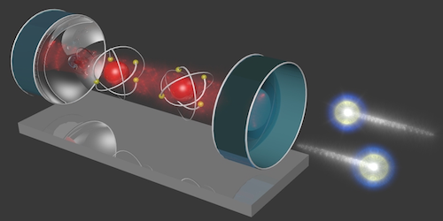

Computational Set 2: Entangling Operations through strong light-matter coupling#
Jay Foley, Associated Professor of Chemistry, University of North Carolina Charlotte
Other open-source projects we contribute to:
Molecular Sciences Software Institute Tutorials and Workshops
Psi4Numpy Reference Implementations of Quantum Chemistry Methods

Image of two atoms being entangled by photons confined by an optical cavity taken from this highlight of the paper Cavity Carving of Atomic Bell States from Phys. Rev. Lett. 118, 210503 (2017).
🧩 Step 1: Defining the Hamiltonian#
🎯 Learning Outcomes#
By the end of this step, you should be able to:
Explain the terms in the Hamiltonian for two qubits (two independent two-level systems) coupled to a quantum light states of an optical cavity (Tavis–Cummings model).
Explain how cavity-mediated coupling enables excitation transfer between two qubits
Represent the Hamiltonian in a tensor product basis between uncoupled qubit and cavity states
Understand how coupling two qubits to quantum light states in an optical cavity can facilitate the generation of entangled states known as Bell states
🧮 Representing the states of our system#
We will represent the states of our system in a basis of uncoupled qubits and photon occupation states.
The basis states for each individual qubit are as follows:
and similarly for the cavity,
where we truncate cavity states at \(|1\rangle\). Physically, you can think of these cavity states as defining the number of photons occupying the cavity, where \(|0\rangle\) represent an empty cavity with 0 photons in it, \(|1\rangle\) represents a cavity with 1 photon in it, and so on. The uncoupled basis for the cavity and two qubits can be represented as tensor products of these individual basis states
where \(\otimes\) denotes a tensor product.
Tensor Product Example#
As an example, the tensor product between the cavity state \(|0\rangle\) and the qubit ground state \(|g\rangle\) is given by:
This corresponds to the joint state where both the cavity and qubit are in their respective ground states.
Next we will introduce the Tavis-Cummings model that includes an interaction between each qubit and the cavity.
🔬 The Tavis–Cummings Hamiltonian#
For two (or more) qubits coupled to an \(N\)-level cavity:
⚡ Term 1: Bare qubit Hamiltonian#
Each two-level system (qubit) has an energy splitting described by:
with Pauli matrix:
So for one qubit:
📡 Term 2: Bare cavity Hamiltonian#
The free Hamiltonian of the cavity mode is:
If we truncate the cavity state space to \(|0\rangle, |1\rangle\):
So:
🔄 Term 3: Interaction Hamiltonian#
The interaction term couples the cavity photons to the qubits through the exchange of an excitation.
where we can interpret the operator \(\sigma_{+}\) as an operator that takes the qubit from the ground to excited state, \(\sigma_{-}\) takes the qubit from the excited to ground state, \(a^\dagger\) excites the cavity by one photon, and \(a\) de-excites the cavity by one photon. The matrix form of these operators follows:
and the cavity ladder operators truncated to \( |0\rangle, |1\rangle \):
So the coupling block looks like:
(in the truncated \(|0\rangle \otimes |g\rangle, |0\rangle \otimes |e\rangle, |1\rangle \otimes g\rangle, |1\rangle \otimes e\rangle\) basis). Physically, you can think of this interaction as moving excitations between the qubit and the cavity!
✨ Putting all terms together gives the Tavis–Cummings Hamiltonian in block-matrix form, built from:
Qubit terms: diagonal blocks (\(-\hbar \omega/2 \, \sigma_z\))
Cavity term: photon number operator (\(\hbar \omega a^\dagger a\))
Interaction: off-diagonal couplings that exchange excitations between the cavity and qubit(s).
⚡ Physical Picture: Generating Bell states via cavity coupling#
We model the following process to evolve an initial factorizable state to a non-factorizable (entangled) Bell state
Initial excitation: At \(t=0\), molecule 1 is excited and coupled to the cavity,
\[|\Psi(t=0)\rangle = |0\rangle \otimes |e\rangle \otimes |g\rangle\]Excitation transfer: Over time \(T_1\), molecule 1 exchanges energy with the cavity,
Switch coupling: At \(T_1\), molecule 1 decouples and molecule 2 couples.
Final exchange: By \(T_2\), molecule 2 has exchanged energy with the cavity.
If \(T_1\) and \(T_2\) are designed properly, the qubits end in a Bell state:
🧮 Step 2: Building the Basis States#
Now we’ll explicitly construct the uncoupled basis states by taking tensor products of the cavity states \(|0\rangle, |1\rangle\) and the qubit states \(|g\rangle, |e\rangle\).
🎯 Learning outcomes:
Represent cavity and molecular states as column vectors.
Use tensor products (via
np.kron(A,B), which performs the Kronecker product betweenAandB, equivalent to \({\bf A} \otimes {\bf B}\) ) to build composite states.Confirm the basis matches the order written in the previous section.
import numpy as np
import numpy.linalg as la
# Define the Hamiltonian parameters
omega_0 = 1.0 # Atomic frequency (in arbitrary units)
omega = 1.0 # Cavity frequency (in arbitrary units)
g = 0.1 # Coupling strength (in arbitrary units)
hbar = 1.0 # Reduced Planck's constant (set to 1 for simplicity)
# Gate times
T1_time = np.pi / (4 * g)
T2_time = 2 * np.pi / (4 * g)
# --- Basis vectors for individual subsystems ---
z_ket = np.array([[1], [0]]) # |0> cavity state
o_ket = np.array([[0], [1]]) # |1> cavity state
g_ket = np.array([[1], [0]]) # |g> ground state of a molecule
e_ket = np.array([[0], [1]]) # |e> excited state of a molecule
# --- Tensor products to build composite states ---
# ✏️ TODO 1: Define composite states using nested np.kron(left_state, np.kron(middle_state, right_state))
zgg_ket = ... # |0> ⊗ |g> ⊗ |g>
zge_ket = ... # |0> ⊗ |g> ⊗ |e>
zeg_ket = ... # |0> ⊗ |e> ⊗ |g>
zee_ket = ... # |0> ⊗ |e> ⊗ |e>
ogg_ket = ... # |1> ⊗ |g> ⊗ |g>
oge_ket = ... # |1> ⊗ |g> ⊗ |e>
oeg_ket = ... # |1> ⊗ |e> ⊗ |g>
oee_ket = ... # |1> ⊗ |e> ⊗ |e>
# --- Optional: Insert Print Statements to inspect one or more of the composite ket states ---
Step 2: Constructing the Hamiltonian#
We’ll now set up the Hamiltonian matrix in Python for the 2-level atom and 2-level cavity.
The definitions of some of the key matrices follow.
and with these definitions, we can build numpy arrays corresponding to each of these matrices using the following syntax demonstrated for \(\sigma_z\):
sigma_z = np.array([[1, 0], [0, -1]])
# 🧩 Step: Define Pauli and ladder operators in matrix form
# --- Pauli matrices for the two-level system (qubit / molecule) ---
# ✏️ TODO 1: Define sigma_z using np.array([[1, 0], [0, -1]])
sigma_z = ...
# ✏️ TODO 2: Define the lowering operator sigma_minus
# (Hint: sigma_- = [[0, 1], [0, 0]])
sigma_minus = ...
# ✏️ TODO 3: Define the raising operator sigma_plus
# (Hint: sigma_+ = [[0, 0], [1, 0]])
sigma_plus = ...
# --- Ladder operators for the truncated cavity (|0>, |1> basis) ---
# ✏️ TODO 4: Define the annihilation operator 'a'
# (Hint: a = [[0, 1], [0, 0]])
a = ...
# ✏️ TODO 5: Define the creation operator 'adag'
# (Hint: a† = [[0, 0], [1, 0]])
adag = ...
# ✅ Quick sanity check
print("sigma_z:\n", sigma_z)
print("sigma_minus:\n", sigma_minus)
print("sigma_plus:\n", sigma_plus)
print("a:\n", a)
print("adag:\n", adag)
# 🧪 Verify the properties of your operators by running this block
# --- Pauli operator relationships ---
print("🧭 Checking Pauli operator relationships...\n")
# Identity from Pauli matrices
identity_qubit = np.eye(2)
# ✏️ TODO 1: Verify that σ₊σ₋ + σ₋σ₊ = I (the identity matrix)
lhs_pauli = sigma_plus @ sigma_minus + sigma_minus @ sigma_plus
print("σ₊σ₋ + σ₋σ₊ =\n", lhs_pauli)
assert np.allclose(lhs_pauli, identity_qubit), "❌ Check your sigma_plus/sigma_minus definitions!"
# ✏️ TODO 2: Compute the commutator [σ₊, σ₋]
comm_pauli = sigma_plus @ sigma_minus - sigma_minus @ sigma_plus
print("\n[σ₊, σ₋] =\n", comm_pauli)
print("Expected result: σ_z\n")
# --- Cavity operator relationships ---
print("💡 Checking cavity ladder operator relationships...\n")
# ✏️ TODO 3: Verify that a†a is the number operator
num_op = adag @ a
print("a†a =\n", num_op)
print("Expected result:\n[[0, 0], [0, 1]]\n")
# ✏️ TODO 4: Compute the commutator [a, a†]
comm_cavity = a @ adag - adag @ a
print("[a, a†] =\n", comm_cavity)
print("Expected result:\n[[1, 0], [0, -1]] (i.e., the Pauli σ_z equivalent for 2-level truncation)\n")
# ✅ If no assertion failed, all is good!
print("✅ All operator checks passed! 🎉")
🧱 Building the Hamiltonian in the Composite Hilbert Space#
Now we’ll extend the operators you defined earlier into the full tripartite Hilbert space, which is the tensor product of:
\(\mathscr{H}_{\text{total}} = \mathscr{H}_{\text{cavity}} \otimes \mathscr{H}_{\text{qubit 1}} \otimes \mathscr{H}_{\text{qubit 2}} \)
Each subsystem is two-dimensional (truncated to \(|0\rangle, |1\rangle\) for the cavity and \(|g\rangle, |e\rangle\) for each molecule), so the total dimension is \(2 \times 2 \times 2 = 8\).
The total Hamiltonian, however, is a sum of tensor-product–extended operators, not a tensor product of Hamiltonians:
\(H_{\text{total}} = H_{\text{cavity}} \otimes I_1 \otimes I_2 + I_{\text{cav}} \otimes H_1 \otimes I_2 + I_{\text{cav}} \otimes I_1 \otimes H_2 + H_{\text{int}} \)
Each term acts only on its subsystem but lives in the full composite space.
⚙️ Step 1: Identities for Each Subspace#
We start by defining the \(2\times2\) identity matrices for the cavity and for a generic qubit:
These act as “placeholders” when we want an operator to act on one subsystem but leave the others unchanged.
🧩 Step 2: Tensor-Product Construction of Operators#
We build operators for each molecule and for the cavity in the composite space using the Kronecker product (np.kron):
For qubit 1: $\( \sigma_{z,1} = I_{\text{cav}} \otimes \sigma_z \otimes I_{\text{q}}, \quad \sigma_{+,1} = I_{\text{cav}} \otimes \sigma_+ \otimes I_{\text{q}}, \quad \sigma_{-,1} = I_{\text{cav}} \otimes \sigma_- \otimes I_{\text{q}} \)$
For qubit 2: $\( \sigma_{z,2} = I_{\text{cav}} \otimes I_{\text{q}} \otimes \sigma_z, \quad \sigma_{+,2} = I_{\text{cav}} \otimes I_{\text{q}} \otimes \sigma_+, \quad \sigma_{-,2} = I_{\text{cav}} \otimes I_{\text{q}} \otimes \sigma_- \)$
For the cavity: $\( a = a \otimes I_{\text{q}} \otimes I_{\text{q}}, \qquad a^\dagger = a^\dagger \otimes I_{\text{q}} \otimes I_{\text{q}} \)$
This ensures that each operator acts only on its subsystem while preserving the full system dimension.
# create identities for each Hilbert space
Icav = np.eye(2)
Iq = np.eye(2)
# 🧩 Build operators in the composite (tripartite) Hilbert space
# The total space is: cavity ⊗ qubit 1 ⊗ qubit 2
# Hints:
# - Use np.kron() to take Kronecker (tensor) products
# - Remember: np.kron(A, B) ⊗ C = np.kron(A, np.kron(B, C))
# - When an operator should act only on one subsystem,
# multiply it by identity matrices on the other two
# --- Operators for molecule (qubit) 1 ---
# ✏️ TODO 1: Define sigma_z for qubit 1
# sz1 = np.kron( ..., np.kron( ..., ... ))
sz1 = ...
# ✏️ TODO 2: Define sigma_plus for qubit 1
# sp1 = np.kron( ..., np.kron( ..., ... ))
sp1 = ...
# ✏️ TODO 3: Define sigma_minus for qubit 1
# sm1 = np.kron( ..., np.kron( ..., ... ))
sm1 = ...
# --- Operators for molecule (qubit) 2 ---
# ✏️ TODO 4: Define sigma_z for qubit 2
# sz2 = np.kron( ..., np.kron( ..., ... ))
sz2 = ...
# ✏️ TODO 5: Define sigma_plus for qubit 2
# sp2 = np.kron( ..., np.kron( ..., ... ))
sp2 = ...
# ✏️ TODO 6: Define sigma_minus for qubit 2
# sm2 = np.kron( ..., np.kron( ..., ... ))
sm2 = ...
# --- Operators for the cavity mode ---
# ✏️ TODO 7: Define the annihilation operator (a) in full space
# am = np.kron( ..., np.kron( ..., ... ))
am = ...
# ✏️ TODO 8: Define the creation operator (a† = adag) in full space
# ap = np.kron( ..., np.kron( ..., ... ))
ap = ...
# 💡 Hint:
# For the cavity operators, they should act only on the cavity subspace,
# so they go in the first tensor position, followed by identities for both qubits.
#
# For qubit 1, the operator acts on the middle subspace.
# For qubit 2, it acts on the last subspace.
⚡ Step 3: Hamiltonian Terms#
Using these building blocks, we define:
Bare energies: $$ -\frac{\hbar \omega_0}{2}(\sigma_{z,1} + \sigma_{z,2})
\hbar \omega, a^\dagger a $$ which give the unperturbed qubit and cavity energies.
Interaction terms: $\( \hbar g \left(a\,\sigma_{+,i} + a^\dagger\,\sigma_{-,i}\right) \)\( which represents the exchange of an excitation between the cavity and qubit \)i$.
🔁 Step 4: Two Coupling Configurations#
We’ll define:
\(H_1\) — only molecule 1 coupled to the cavity (molecule 2 off).
\(H_2\) — only molecule 2 coupled to the cavity (molecule 1 off).
\(H\) — both molecules coupled simultaneously (used later).
These Hamiltonians let us simulate the iSWAP protocol, where coupling is “switched” between molecules in time.
💡 Tip:
Try printing the shapes of H1, H2, and H — they should each be \(8\times8\) Hermitian matrices.
# 🧮 Step: Build the composite Hamiltonians
# The total Hamiltonian acts on the full 8×8 composite space:
# cavity ⊗ qubit 1 ⊗ qubit 2
# We’ll build:
# - H1 : only molecule 1 coupled to the cavity
# - H2 : only molecule 2 coupled to the cavity
# - H : both molecules coupled (not used here, but useful later)
# --- Example: H1 (Molecule 1 coupled) ---
# This Hamiltonian includes:
# 1. Bare qubit energies (σ_z terms)
# 2. Bare cavity energy (a†a term)
# 3. Coupling between the cavity and molecule 1 (a σ_+1 + a† σ_-1)
# Note: We use * for scalar multiplication and for multiplying a matrix by a scalar
# We use @ for matrix-matrix multiplication
H1 = -hbar * omega_0 / 2 * sz1 # qubit 1 Hamiltonian
H1 -= hbar * omega_0 / 2 * sz2 # qubit 2 Hamiltonian
H1 += hbar * omega * ap @ am # cavity Hamiltonian
H1 += hbar * g * ( am @ sp1 + ap @ sm1 ) # coupling: cavity ↔ molecule 1
print("✅ H1 constructed successfully! Dimension:", H1.shape)
# --- ✏️ TODO: Build H2 (Molecule 2 coupled) ---
# 💡 HINTS:
# - Start from a copy of H1 (use np.copy())
# - Add coupling terms for molecule 2: (a σ_+₂ + a† σ_-₂)
# - Remove coupling terms for molecule 1 (subtract them)
H2 = ... # start from H1
H2 += ... # add coupling for molecule 2
H2 -= ... # subtract coupling for molecule 1
# --- ✏️ TODO: Build H (Both molecules coupled) ---
# 💡 HINTS:
# - Start again from H1
# - Add both molecule 1 and molecule 2 coupling terms (no subtractions this time)
# - This represents the case when both qubits are simultaneously interacting with the cavity
H = np.copy(H1)
H += hbar * g * ( am @ sp2 + ap @ sm2 )
# --- Optional sanity checks ---
print("H2 shape:", H2.shape)
print("H shape:", H.shape)
print("Hermitian check H1:", np.allclose(H1, H1.conj().T))
print("Hermitian check H2:", np.allclose(H2, H2.conj().T))
🌱 Step 5: Defining the Initial State#
We’ll start with the system in a single-excitation configuration:
The cavity is empty \((|0\rangle\)),
Qubit 1 is excited (\(|e\rangle\)),
Qubit 2 is in its ground state (\(|g\rangle\)).
🧮 In the Uncoupled Basis#
The corresponding density matrix is formed as the outer product: $\( \rho(0) = \left(|0\rangle \otimes |e\rangle \otimes |g\rangle\right) \left(\langle g| \otimes \langle e| \otimes \langle 0|\right) \)\( This state is often written compactly as: \)\( \rho(0) = |0eg\rangle \langle 0eg| \)$ and represents a pure state localized on molecule 1.
💡 Physical Picture#
At \(t=0\), the energy resides entirely in qubit 1.
The cavity and qubit 2 begin in their ground states.
As time evolves, this excitation can be exchanged through the cavity mode — forming superpositions that resemble hybrid light-matter states called polaritons.
💭 Checkpoint Question:
What physical process causes population transfer between \(|0eg\rangle\) and \(|0ge\rangle\) during the iSWAP sequence?Hint (click to expand)
The excited qubit can interact with the cavity vacuum ($|0\rangle$) to stimulate the emission of a photon into the cavity. Similarly, an occupied cavity ($|1\rangle$) can interact with a qubit in the ground state to stimulate absorption of a photon.
# 🧩 Create an initial state corresponding to |0> ⊗ |e> ⊗ |g>
# Recall:
# |0>_cavity = z_ket
# |1>_cavity = o_ket
# |g>_qubit = g_ket
# |e>_qubit = e_ket
# ✏️ TODO 1: Assign psi0 to the appropriate basis vector from our first code block
psi0 = ...
# ✅ Step: Construct the density matrix ρ = |ψ⟩⟨ψ|
# ✏️ TODO 2: Use outer product (np.outer or psi @ psi.conj().T)
rho0 = ...
# --- Sanity checks ---
print("Shape of psi0:", psi0.shape)
print("Norm squared:", np.vdot(psi0, psi0))
print("Density matrix shape:", rho0.shape)
print("Trace(ρ) =", np.trace(rho0)) # should be 1 for a pure normalized state
# 💡 Tip:
# Try visualizing which basis states have nonzero amplitudes.
# Since this is |0eg>, only one entry in the 8-element state vector should be 1.
⏱️ Step: Time-Domain Simulation — Sequential Coupling Dynamics#
In the next section, we’ll simulate the time evolution of our system in the uncoupled basis by solving the Liouville–von Neumann equation:
The code block below implements helper functions for solving the Liouville-von Neuman equation. This code is all pre-written and we will skip ahead for the sake of time, but I invite you to review on your own later!
# Function to compute the expectation value of the Hamiltonian for a given state
def compute_expectation_value(state, H):
return np.vdot(state, H @ state)
def print_operator_action(op, ket, op_name="Operator", ket_name="Ket"):
""" prints the action of an operator on a ket in a formatted way """
result = op @ ket
# Formatters
fmt = {'all': lambda x: f"{x: 6.3f}"}
print(f"\n=== {op_name} acting on {ket_name} ===\n")
print(f"{op_name} matrix in tensor product space:")
print(np.array2string(op, formatter=fmt))
print(f"\n{ket_name} vector in tensor product space:")
print(np.array2string(ket.reshape(-1, 1), formatter=fmt))
print(f"\nResulting vector in tensor product space ({op_name} ⋅ {ket_name}):")
print(np.array2string(result.reshape(-1, 1), formatter=fmt))
def represent_basis_in_eigen(basis_names, eigvecs, energies=None, tol=1e-6):
"""
For each original basis state |b_j>, prints its expansion
|b_j> = sum_i c_{j,i} |ψ_i>
where c_{j,i} = <ψ_i|b_j> = conj(eigvecs[j, i]) for unitary eigvecs.
Parameters
----------
basis_names : list of str
Names of the basis kets in the same order as the rows of eigvecs.
eigvecs : np.ndarray, shape (N, N)
Columns are the eigenvectors |ψ_i> expressed in the original basis.
energies : array-like, optional
If provided, labels the eigenstates by energy order.
tol : float
Threshold below which coefficients are treated as zero.
"""
N = eigvecs.shape[0]
assert eigvecs.shape == (N, N)
assert len(basis_names) == N
# If energies given, label states by E; otherwise by index
labels = []
if energies is not None:
for i, E in enumerate(energies, 1):
labels.append(f"ψ_{i} (E={E:.4f})")
else:
labels = [f"ψ_{i}" for i in range(1, N+1)]
for j, name in enumerate(basis_names):
# coefficients c_{j,i} = <ψ_i|b_j> = conj(eigvecs[j,i])
coefs = np.conj(eigvecs[j, :])
terms = []
for i, c in enumerate(coefs):
if abs(c) < tol:
continue
# format complex; drop imaginary part if ~0
if abs(c.imag) < tol:
terms.append(f"{c.real:+.4f}·|{labels[i]}>")
else:
terms.append(f"({c.real:+.4f}{c.imag:+.4f}j)·|{labels[i]}>")
combo = " + ".join(terms) if terms else "0"
print(f"|{name}> = {combo}\n")
# simple function for printing real part of complex matrix
def complex_formatter(x):
return f"{x.real: .2f}" #{x.imag:+.2f}j"
def commutator(A, B):
"""Compute the commutator [A, B] = AB - BA"""
return A @ B - B @ A
def liouville_rhs(H, rho, hbar=1.0):
"""Compute the right-hand side of the Liouville-von Neumann equation: -i/hbar * [H, rho]"""
return -1j / hbar * commutator(H, rho)
def rk4_step(rho, H, dt, hbar=1.0):
"""
Apply a single RK4 step to evolve the density matrix rho using a time-independent Hamiltonian H.
Parameters:
- rho: numpy.ndarray, the current density matrix
- H: numpy.ndarray, the time-independent Hamiltonian
- dt: float, time step
- hbar: float, Planck's reduced constant (default = 1.0)
Returns:
- rho_next: numpy.ndarray, the updated density matrix after one time step
"""
k1 = liouville_rhs(H, rho, hbar)
k2 = liouville_rhs(H, rho + 0.5 * dt * k1, hbar)
k3 = liouville_rhs(H, rho + 0.5 * dt * k2, hbar)
k4 = liouville_rhs(H, rho + dt * k3, hbar)
rho_next = rho + (dt / 6.0) * (k1 + 2*k2 + 2*k3 + k4)
return rho_next
We will perform this in two stages:
Stage 1:
Evolve under \( H_1 \) for a duration \(T_1 \),
where molecule 1 is coupled to the cavity (and molecule 2 is effectively off).Stage 2:
Evolve under \(H_2 \) for a duration \(T_2 \),
where molecule 2 is coupled to the cavity (and molecule 1 is now off).
At each time step, we’ll extract the diagonal elements of the density matrix,
which represent the population of each basis state.
🎓 Physical Interpretation#
This two-step simulation models the process of sequential energy transfer via the cavity mode:
Initially, qubit 1 (molecule 1) exchanges its excitation with the cavity.
After time \(T_1\), qubit 1 decouples and qubit 2 couples in.
The cavity then transfers its excitation to qubit 2.
If the timing is chosen properly, the excitation is fully swapped from molecule 1 to molecule 2 — realizing an iSWAP gate between the two molecular qubits.
💭 Reflection Question#
Q: Explain in your own words what physical situation this simulation represents.
What observable process in the system corresponds to the change in the diagonal elements of the density matrix over time?
Hint (click to expand)
Think about how population moves among $|0eg\rangle$, $|1gg\rangle$, and $|0ge\rangle$ during each stage — and how this corresponds to an excitation hopping from molecule 1 → cavity → molecule 2.# 🕒 Time evolution of the system
# -------------------------------------------------------
# This simulation will:
# 1️⃣ Evolve the density matrix under H1 (molecule 1 coupled) for time T1
# 2️⃣ Evolve under H2 (molecule 2 coupled) for time T2
# 3️⃣ Record populations (diagonal elements of ρ) over time
# -------------------------------------------------------
# --- Parameters ---
n_time = 800 # total number of time steps
dt = 0.05 # timestep (in whatever time units we’re using)
n_time_1 = T1_time / dt # steps for first stage (H1)
n_time_2 = T2_time / dt # steps for second stage (H2)
# --- Initial condition ---
# Make a copy of the initial density matrix (uncoupled basis)
rho_init = np.copy(rho0)
# --- Time array and population storage ---
t = []
pops_uncoupled = np.zeros((n_time, rho_init.shape[0])) # store populations for each basis state
# --- Loop over time steps ---
for i in range(n_time):
if i < n_time_1:
# Stage 1: molecule 1 coupled
# evolve using H1
rho_new = rk4_step(rho_init, H1, dt, hbar=1.0)
elif i < (n_time_1 + n_time_2):
# Stage 2: molecule 2 coupled
# evolve using H2
rho_new = rk4_step(rho_init, H2, dt, hbar=1.0)
# --- ✏️ Record populations (diagonal elements of ρ) ---
# 💡 Note: np.real(rho_new[k,k]) gives the population of basis state k
for k in range(rho_init.shape[0]):
pops_uncoupled[i, k] = np.real(rho_new[k, k])
# --- Update for next step ---
rho_init = np.copy(rho_new)
t.append(i * dt)
# --- ✅ Sanity checks ---
print("Simulation complete!")
print("Final time:", t[-1])
print("Shape of population array:", pops_uncoupled.shape)
# 🎨 Step: Visualize population dynamics during iSWAP evolution
import matplotlib.pyplot as plt
plt.figure(figsize=(8, 5))
# --- Plot populations for key states ---
plt.plot(t, pops_uncoupled[:, 2], '-', lw=2.2, label=r"$|0eg\rangle$ (qubit 1 excited)")
plt.plot(t, pops_uncoupled[:, 4], '--', lw=2.2, label=r"$|1gg\rangle$ (cavity excited)")
plt.plot(t, pops_uncoupled[:, 1], ':', lw=2.2, label=r"$|0ge\rangle$ (qubit 2 excited)")
# --- Aesthetic settings ---
plt.xlabel(r"Time $t$ (arb. units)", fontsize=13)
plt.ylabel(r"Population", fontsize=13)
plt.title("Population Dynamics in the Uncoupled Basis", fontsize=14, weight='bold')
plt.grid(alpha=0.3)
plt.legend(fontsize=11, loc="upper right", frameon=True)
plt.tight_layout()
# --- Optional: mark the gate switching points ---
plt.axvline(x=T1_time, color='gray', linestyle='--', alpha=0.6)
plt.text(T1_time + 0.2, 0.7, r"$T_1$", fontsize=12, color='gray')
plt.axvline(x=T1_time+ T2_time, color='gray', linestyle='--', alpha=0.6)
plt.text(T1_time + T2_time + 0.2, 0.7, r"$T_2$", fontsize=12, color='gray')
# --- Show the result ---
plt.show()
🎯 Step: Comparing to the Target Bell State#
At the end of our simulation, the system should ideally reach an entangled Bell state between the two molecular qubits while the cavity returns to its ground state.
Since the cavity should end in \(|0\rangle\), the full tripartite state is:
This is the antisymmetric (singlet-like) Bell state, which should result if the excitation transfer via the cavity performs an ideal iSWAP operation.
💭 Reflection Question#
What does it mean physically if the final fidelity is less than 1?
Which factors in our model (timing, coupling, truncation, etc.) might cause deviations from the perfect Bell state?
# 🧮 Step: Compute fidelity with the target Bell state
from scipy import linalg as la
# --- ✏️ TODO 1: Construct the target Bell state |Ψ> ---
# 💡 Hint: It’s the antisymmetric superposition of |0ge> and |0eg>.
target_ket = ...
# --- ✏️ TODO 2: Form the corresponding density matrix ρ_target = |Ψ⟩⟨Ψ| ---
target_rho = ...
# --- Inspect both final and target density matrices ---
print("\nFinal density matrix (ρ_final):")
print(np.array2string(rho_new, formatter={'all': complex_formatter}))
print("\nTarget density matrix (ρ_target):")
print(np.array2string(target_rho, formatter={'all': complex_formatter}))
# --- ✏️ Compute fidelity using the Uhlmann formula ---
sqrt_rho = la.sqrtm(rho_new)
intermediate = sqrt_rho @ target_rho @ sqrt_rho
sqrt_intermediate = la.sqrtm(intermediate)
fidelity = np.real(np.trace(sqrt_intermediate))**2
# --- Display result ---
print(f"\n🔹 Fidelity with target Bell state: {fidelity:.6f}")
# 🧭 check:
# If the fidelity is close to 1 → ideal iSWAP achieved!
# If it’s noticeably lower → consider timing or truncation effects.